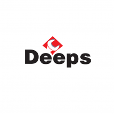

MITEX 2026 · Индия · Стенд 7B10C
DEEPS TOOLS PVT LTD
Карточка проверена 10 ноября 2026, 09:28 · Источник ↗ · Снимок оригинальной карточки ↗
О компании
Основанная в 1979 году господином Джавахаром Лалом Джайном, компания Deeps Tools Pvt. Ltd. является признанным экспортным предприятием, созданным с целью поставки высококачественных ручных инструментов клиентам по всему миру. Благодаря более чем сорокалетнему опыту, Deeps Tools зарекомендовала себя как один из ведущих индийских производителей и экспортёров кованых ручных инструментов. Наша продукция изготавливается с высокой точностью, в соответствии с международными стандартами качества, и пользуется доверием профессионалов по всему миру. Мы специализируемся на гаечных ключах (spanners/wrenches), известных своей прочностью и надёжностью. Продолжая традиции инноваций, мы с гордостью представляем нашу последнюю разработку — водяные пассатижи (Water Pump Pliers), созданные для прочности, удобства и долговечности. Приглашаем вас посетить наш стенд на выставке MITEX Russia, чтобы познакомиться с качеством, инновациями и мастерством, которые определяют Deeps Tools.
Контакты
Все контактные сведения из карточки
Контакты Manufacturing Unit-1 Телефон: +91-161-2222523 E-mail: sales@deepstools.in Адрес: 141003, Индия, Punjab, Ludhiana, 320-321, Transport Nagar, Industrial Area- A Веб-сайт: http://www.deepstools.com E-mail: sales@deepstools.in Телефон: +91-94170-78188
Ранее найденные соцсети — октябрь 2026
Эти ссылки найдены при предыдущем обходе сайтов компаний. Актуальность контактов уточняйте у участника.
Все рубрики участника
Mitex - Рубрикатор
- 4. Инструмент и оборудование для строительно-монтажных, окрасочных и малярных работ
- 5. Слесарный, монтажный, столярный, ручной инструмент
- 6. Инструменты и оборудование для обработки и резки металла, проволоки, труб, камня, стекла, керамики, пластмасс, дерева
- 8. Инструмент и оборудование для автосервиса
Зал
- Зал № 7
Участник выставки
- MITEX
Фотографии и изображения


Видео, каталоги и документы
В доступной карточке нет видео или документов. Смотрите сайт участника.